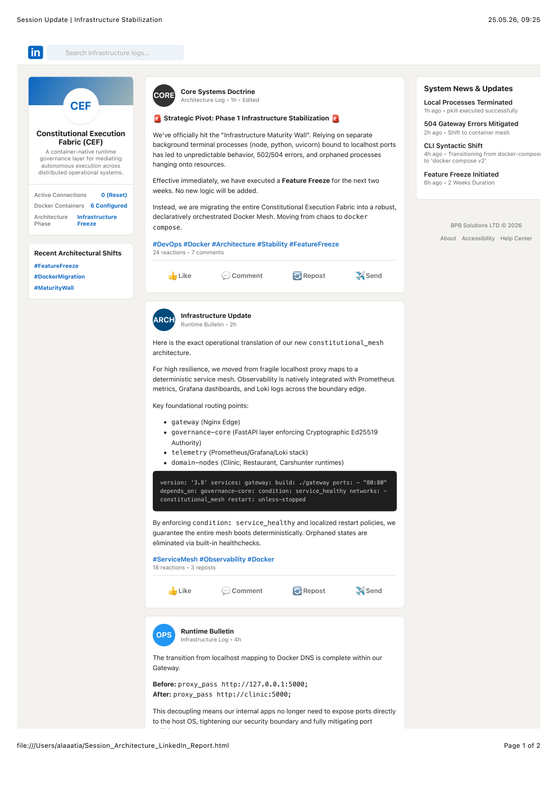

Executive summary
PMS4U is documented as an evolving governance architecture that places authority, admissibility, evidence and runtime decision-making immediately before consequence-bearing execution.
Technical capability is separated from governance permission.
Governance moves from passive documentation into the execution path.
Evidence supports decisions and later replay.
Reconstructing an engineering history
The methodology correlates repositories, commits, deployments, engineering reports, public materials and integrity manifests.
Observation
What a dated artifact directly contains.
Interpretation
What a reviewer may reasonably infer from corroborating artifacts.
Mapping the evidence landscape
Primary engineering evidence
Source files, immutable commit identifiers, deployment events and contemporary engineering reports.
Public evidence
Published posts, public repositories, specifications and externally visible deployment history.
Integrity evidence
SHA-256 manifests, artifact identities and packaged archives.
The architecture takes shape
Execution Boundary and authority-aware runtime control
The historical artifact states “continuous validity under changing reality,” describes context shifts and authority degradation, and blocks execution when authority is invalid at the execution moment.
From authority-first to evidence-bound
Evidence IDs, immutable signed transitions, state mutation control and tri-layer separation are documented.
Constitutional Execution Fabric
CEF is described as a container-native runtime governance layer mediating autonomous execution across distributed operational systems.
Canonical enforcement and public doctrine
Deployment activity consolidates proof assets, enforcement demonstrations and category boundaries.
Runtime hardening and research formalization
The architecture expands into specifications, replay, verification and operational product surfaces.
Governance becomes runtime infrastructure
The architecture separates application capability from the authority to create consequence.
Runtime authority
Authority is contextual and time-sensitive.
Decision outputs
ALLOW, HOLD, DENY, REVIEW and DIAGNOSE create a richer governance surface than binary access control.
From execution control to evidence continuity
Authority
Who may act under present conditions?
Admissibility
Is the action sufficiently justified?
Evidence continuity
Can the request, decision, execution and result be reconstructed?
Constitutional Execution Fabric
CEF elevates governance from application-local controls into a shared fabric for distributed operational systems.
Constitutional invariants
- Authority is evaluated before consequence.
- Governance decisions remain explainable.
- Evidence accompanies decision-making.
- Applications do not self-authorize state mutation.
DEFER
INTERRUPT
DENY

From implementation to doctrine
Evidence-based findings
Strongly supported
A continuous development record involving execution boundaries, runtime context, authority, evidence-bound transitions, CEF infrastructure and later formalization.
Not established by chronology alone
Legal ownership, exclusivity, patent priority, absence of influence, or originality of every later architectural term.